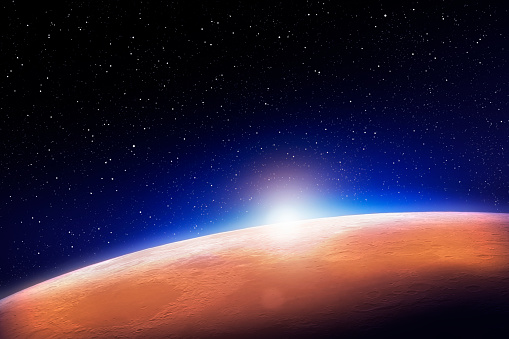
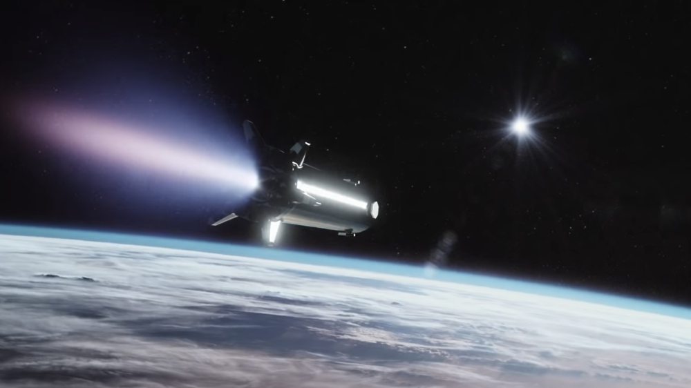

Bakgrund
 En grundläggande fråga för mänskligheten är att förstå om liv existerar någon annanstans i universum. Att hitta liv utanför jorden skulle förändra vår syn på universum och ge oss en bättre förståelse för hur livet utvecklar sig i universum.
Resan till Mars är ett av framtidens viktigaste och mest spännande rymduppdrag eftersom Mars är den planet i vårt solsystem som är mest lik jorden. Därför är chansen att hitta utomjordiskt liv högst på Mars vilket är en av många anledningar till att resa till Mars. Dessutom vill vi, utöver att söka efter liv, också utforska planetens geologiska sammansättning samt förbereda oss för framtida mänsklig utforskning (ESA, hämtat 19/4-2023).
Hur ska vi ta oss till Mars?
Att ta sig till Mars har länge varit en dröm för människan och de två stora aktörerna som försöker uppfylla den här drömmen är NASA och framförallt SpaceX (The Conversation, 2020). Med Starship, SpaceX lösning för marsresande, kan denna mänskliga drömmen bli verklighet.
Starship är ett helt återanvändbart transportsystem gjort för att förflytta mänsklig besättning och last till jordens omloppsbana, månen och Mars (SpaceX, 2022).
Med en enorm längd på 120 meter och en diameter på 9 meter ger den en nyttolastkapacitet på 100-150 metriska ton. Storleken och nyttolastkapaciteten ger Starship en möjlighet att transportera allt från förnödenheter och utrustning till människor som ska kolonisera Mars (SpaceX, 2022).
Starship kommer med flera innovativa lösningar till problem som möts under en resa till Mars. Eftersom Starship kommer att tankas i rymden kan rymdskeppet använda sin fulla kapacitet för att forsla besättning och last istället för att behöva bära på bränsle som annars skulle krävts för att nå sin destination. Detta gör resan till Mars mer kostnadseffektiv och snabbare än tidigare rymdresor (The Conversation, 2020).
SpaceX har sagt att de ska försöka få människor till Mars så fort som möjligt men är inte säkra på när. Enligt en tweet av deras VD Elon Musk är 2029 det tidigaste datumet människor först kan kliva på Mars (NDTV, 2023).
Vad för problem finns med resan till Mars?

Huvudanledningen till de flesta problemen med resan till Mars är bränsle. Det är fortfarande, trots SpaceX lösning att tanka Starship i rymden så att den når längre med all last, osäkert om bränslet räcker (The Conversation, 2020).
Ett annat problem som stötts på är Starships inbromsning innan den når Jordens atmosfär. Detta kräver mer bränsle och är en av de mest kritiska stegen i Mars-resan. Det kräver att rymdfarkosten har tillräckligt med bränsle för att bromsa in i atmosfären och landa säkert på jorden. SpaceX arbetar med att utveckla teknik för att göra detta möjligt, vilket kan minska risken för olyckor och göra resan till Mars mer pålitlig.
Bland annat så arbetar SpaceX med användningen av in-situ drivgasproduktion på Mars för att generera bränsle för återresan. Kort sagt använder man resurser från Mars yta för att producera metan och syre drivmedel för hemresan (The Conversation, 2020).
Källor
European Space Agency. (inget datum). Why go to Mars. Hämtad 19/4-2023, från https://www.esa.int/Science_Exploration/Human_and_Robotic_Exploration/Exploration/Why_go_to_Mars
SpaceX. (2022). Starship. Hämtad 18/4-2023, från https://www.spacex.com/vehicles/starship/index.html
Chris James. (December 20, 2020). How to get people from Earth to Mars and safely back again. The Conversation. Hämtad 19/4-2023, från https://theconversation.com/how-to-get-people-from-earth-to-mars-and-safely-back-again-150167
Bhavya Sukheja. (Februari 11, 2023). After Starship Test, Elon Musk Says It Is "Highly Likely" Man Will Go To Mars Within 10 Years. NDTV. Hämtad 18/4-2023, från https://theconversation.com/how-to-get-people-from-earth-to-mars-and-safely-back-again-150167